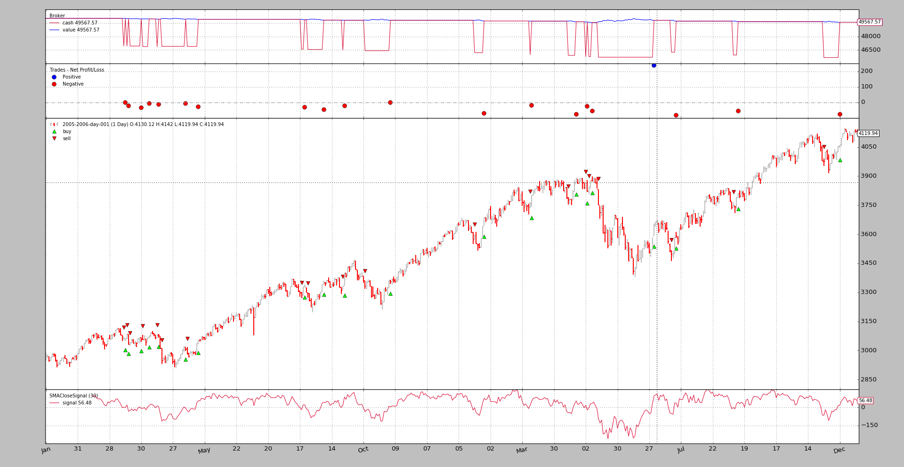

Strategy with Signals¶
Operating backtrader is also possible without having to write a Strategy. Although this is the preferred way, due to the object hierarchy which makes up the machinery, using Signals is also possible.
Note
Available from version 1.8.0.x
Quick summary:
- Instead of writing a Strategy class, instantiating Indicators, writing the buy/sell logic ...
- The end user add Signals (indicators anyhow) and the rest is done in the background
Quick example:
import backtrader as bt
data = bt.feeds.OneOfTheFeeds(dataname='mydataname')
cerebro.adddata(data)
cerebro.add_signal(bt.SIGNAL_LONGSHORT, MySignal)
cerebro.run()
Et voilá!.
Of course the Signal itself is missing. Let’s define a very dum Signal which yields:
Longindication if thecloseprice is above a Simple Moving AverageShortindication if thecloseprice is below a Simple Moving Average
The definition:
class MySignal(bt.Indicator):
lines = ('signal',)
params = (('period', 30),)
def __init__(self):
self.lines.signal = self.data - bt.indicators.SMA(period=self.p.period)
And now it is really done. When run is executed Cerebro will take care of
instantiating a special Strategy instance which knows what to do with the
Signals.
Initial FAQ¶
How is the volume of buy/sell operations determined?
A cerebro instance adds automatically a
FixedSizesizer to strategies. The end user can change the sizer to alter the policy withcerebro.addsizerHow are orders executed?
The execution type is
Marketand the validity is Good Until Canceled
Signals technicalities¶
From a technical and theoretical point of view can be as described:
A callable that returns another object when called (only once)
This is in most cases the instantiation of a class, but must not be
Supports the
__getitem__interface. The only requested key/index will be0
From a practical point of view and looking at the example above a Signal is:
A lines object from the backtrader ecosystem, mostly an Indicator
This helps when using other Indicators like when in the example the Simple Moving Average is used.
Signals indications¶
The signals delivers indications when queried with signal[0] and the
meaning is:
> 0->long indication´< 0->short indication´== 0-> No indication
The example does simple arithmetic with self.data - SMA and:
- Issues a
long indicationwhen thedatais above theSMA- Issues a
short indicationwhen thedatais below theSMA
Note
When no specific price field is indicated for the data, the
close price is the reference price is.
Signals Types¶
The constants indicated below as seen in the example above, are directly available from the main bactrader module as in:
import backtrader as bt
bt.SIGNAL_LONG
There are 5 types of Signals, broken in 2 groups.
Main Group:
LONGSHORT: bothlongandshortindications from this signal are taken
LONG: -longindications are taken to go long -shortindications are taken to close the long position. But:
- If a
LONGEXIT(see below) signal is in the system it will be used to exit the long- If a
SHORTsignal is available and noLONGEXITis available , it will be used to close alongbefore opening ashort
SHORT: -shortindications are taken to go short -longindications are taken to close the short position. But:
- If a
SHORTEXIT(see below) signal is in the system it will be used to exit the short- If a
LONGsignal is available and noSHORTEXITis available , it will be used to close ashortbefore opening along
Exit Group:
This 2 signals are meant to override others and provide criteria for exitins a
long/shortposition
LONGEXIT:shortindications are taken to exitlongpositionsSHORTEXIT:longindications are taken to exitshortpositions
Accumulation and Order Concurrency¶
The sample Signal shown above will issue long and short indications on a
constant basis, because it simply substracts the SMA value from the
close price and this will always be either > 0 and < 0 (a couple of
times == 0)
This would lead to a continuous generation of orders that would produce 2 situations:
Accumulation: even if already in the market, the signals would produce new orders which would increase the possition in the marketConcurrency: new orders would be generated without waiting for the execution of other orders
To avoid this the default behavior is:
- To Not Accumulate
- To Not allow Concurrency
Should any of these two behaviors be wished, this can be controlled via
cerebro with:
cerebro.signal_accumulate(True)(orFalseto re-disable it)cerebro.signal_concurrency(True)(orFalseto re-disable it)
The sample¶
The backtrader sources contain a sample to test the functionality.
Main signal to be used.
class SMACloseSignal(bt.Indicator):
lines = ('signal',)
params = (('period', 30),)
def __init__(self):
self.lines.signal = self.data - bt.indicators.SMA(period=self.p.period)
And the Exit Signal in case the option is specified.
class SMAExitSignal(bt.Indicator):
lines = ('signal',)
params = (('p1', 5), ('p2', 30),)
def __init__(self):
sma1 = bt.indicators.SMA(period=self.p.p1)
sma2 = bt.indicators.SMA(period=self.p.p2)
self.lines.signal = sma1 - sma2
First run: long and short¶
$ ./signals-strategy.py --plot --signal longshort
The output

To notice:
- The Signal is plotted. This is normal given it is simply an indicator and the plotting rules for it apply
- The strategy is really
longandshort. This can be seen because the cash level never goes back to be the value level- Side note: even for a dumb idea ... (and without commission) the strategy hasn’t lost money ...
Second run: long only¶
$ ./signals-strategy.py --plot --signal longonly
The output

To notice:
- Here the cash level goes back to be the value level after each sell, which means the strategy is out of the market
- Side note: Again no money has been lost ...
Third run: short only¶
$ ./signals-strategy.py --plot --signal shortonly
The output
To notice:
- The 1st operation is a sell as expected and takes place later than the 1st operationa in the 2 examples above. Not until the
closeis below theSMAand the simple substraction yields a minus- Here the cash level goes back to be the value level after each buy, which means the strategy is out of the market
- Side note: Finally the system loses money
Fourth run: long + longexit¶
$ ./signals-strategy.py --plot --signal longonly --exitsignal longexit
The output

To notice:
- Many of the trades are the same, but some are interrupted earlier because the fast movin average in the exit signal crosses the slow moving average to the downside
- The system shows its longonly property with the cash becoming the value at the end of each trade
- Side note: Again money ... even with some modified trades
Usage¶
$ ./signals-strategy.py --help
usage: signals-strategy.py [-h] [--data DATA] [--fromdate FROMDATE]
[--todate TODATE] [--cash CASH]
[--smaperiod SMAPERIOD] [--exitperiod EXITPERIOD]
[--signal {longshort,longonly,shortonly}]
[--exitsignal {longexit,shortexit}]
[--plot [kwargs]]
Sample for Signal concepts
optional arguments:
-h, --help show this help message and exit
--data DATA Specific data to be read in (default:
../../datas/2005-2006-day-001.txt)
--fromdate FROMDATE Starting date in YYYY-MM-DD format (default: None)
--todate TODATE Ending date in YYYY-MM-DD format (default: None)
--cash CASH Cash to start with (default: 50000)
--smaperiod SMAPERIOD
Period for the moving average (default: 30)
--exitperiod EXITPERIOD
Period for the exit control SMA (default: 5)
--signal {longshort,longonly,shortonly}
Signal type to use for the main signal (default:
longshort)
--exitsignal {longexit,shortexit}
Signal type to use for the exit signal (default: None)
--plot [kwargs], -p [kwargs]
Plot the read data applying any kwargs passed For
example: --plot style="candle" (to plot candles)
(default: None)
The code¶
from __future__ import (absolute_import, division, print_function,
unicode_literals)
import argparse
import collections
import datetime
import backtrader as bt
MAINSIGNALS = collections.OrderedDict(
(('longshort', bt.SIGNAL_LONGSHORT),
('longonly', bt.SIGNAL_LONG),
('shortonly', bt.SIGNAL_SHORT),)
)
EXITSIGNALS = {
'longexit': bt.SIGNAL_LONGEXIT,
'shortexit': bt.SIGNAL_LONGEXIT,
}
class SMACloseSignal(bt.Indicator):
lines = ('signal',)
params = (('period', 30),)
def __init__(self):
self.lines.signal = self.data - bt.indicators.SMA(period=self.p.period)
class SMAExitSignal(bt.Indicator):
lines = ('signal',)
params = (('p1', 5), ('p2', 30),)
def __init__(self):
sma1 = bt.indicators.SMA(period=self.p.p1)
sma2 = bt.indicators.SMA(period=self.p.p2)
self.lines.signal = sma1 - sma2
def runstrat(args=None):
args = parse_args(args)
cerebro = bt.Cerebro()
cerebro.broker.set_cash(args.cash)
dkwargs = dict()
if args.fromdate is not None:
fromdate = datetime.datetime.strptime(args.fromdate, '%Y-%m-%d')
dkwargs['fromdate'] = fromdate
if args.todate is not None:
todate = datetime.datetime.strptime(args.todate, '%Y-%m-%d')
dkwargs['todate'] = todate
# if dataset is None, args.data has been given
data = bt.feeds.BacktraderCSVData(dataname=args.data, **dkwargs)
cerebro.adddata(data)
cerebro.add_signal(MAINSIGNALS[args.signal],
SMACloseSignal, period=args.smaperiod)
if args.exitsignal is not None:
cerebro.add_signal(EXITSIGNALS[args.exitsignal],
SMAExitSignal,
p1=args.exitperiod,
p2=args.smaperiod)
cerebro.run()
if args.plot:
pkwargs = dict(style='bar')
if args.plot is not True: # evals to True but is not True
npkwargs = eval('dict(' + args.plot + ')') # args were passed
pkwargs.update(npkwargs)
cerebro.plot(**pkwargs)
def parse_args(pargs=None):
parser = argparse.ArgumentParser(
formatter_class=argparse.ArgumentDefaultsHelpFormatter,
description='Sample for Signal concepts')
parser.add_argument('--data', required=False,
default='../../datas/2005-2006-day-001.txt',
help='Specific data to be read in')
parser.add_argument('--fromdate', required=False, default=None,
help='Starting date in YYYY-MM-DD format')
parser.add_argument('--todate', required=False, default=None,
help='Ending date in YYYY-MM-DD format')
parser.add_argument('--cash', required=False, action='store',
type=float, default=50000,
help=('Cash to start with'))
parser.add_argument('--smaperiod', required=False, action='store',
type=int, default=30,
help=('Period for the moving average'))
parser.add_argument('--exitperiod', required=False, action='store',
type=int, default=5,
help=('Period for the exit control SMA'))
parser.add_argument('--signal', required=False, action='store',
default=MAINSIGNALS.keys()[0], choices=MAINSIGNALS,
help=('Signal type to use for the main signal'))
parser.add_argument('--exitsignal', required=False, action='store',
default=None, choices=EXITSIGNALS,
help=('Signal type to use for the exit signal'))
# Plot options
parser.add_argument('--plot', '-p', nargs='?', required=False,
metavar='kwargs', const=True,
help=('Plot the read data applying any kwargs passed\n'
'\n'
'For example:\n'
'\n'
' --plot style="candle" (to plot candles)\n'))
if pargs is not None:
return parser.parse_args(pargs)
return parser.parse_args()
if __name__ == '__main__':
runstrat()


{kind=link}